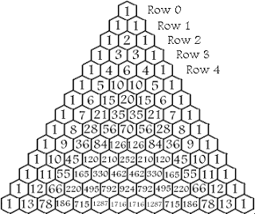
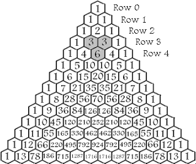

Exercise 1.12
This is the $12^{th}$ exercise in Sicp. In this Exercise, we compute pascal’s Triangle.
The Question
Exercise 1.12: The following pattern of numbers is called Pascals' Triangle.

The numbers at the edge of the triangle are all 1, and each number inside the triangle is the sum of the two numbers above it. Write a procedure that computes elements of Pascal’s triangle by means of a recursive process.
My Thoughts
When I first did this question, it took some time to crack. So I am gonna try go slowly.
We need to understand what exactly is the question? Are we supposed to compute the whole triangle(i.e to a certain row), or just a row, or just a single element?
To that I answer that we can’t store a list of numbers. So we can’t even compute a row. To compute the triangle to certain row, we need to manage to store the list of lists. However, to compute any of that, we need to be able to compute a single element
How to refer to a specific element
In order to compute an element of pascal’s triangle, we need to be able to say which element you are talking about. For this we will use a notation based on the vertical and horizontal position.

Look at that 6. It is the 3rd element in 4th row.
We will refer to it in our function like this:
(p 2 4)
Note: the 3rd element is reffered as the 2nd element as we start counting from zero
The Answer
We can now start solving the problem
Designing the recursive process
We know 2 things:
- 0th and the nth column is zero.
- An element is the sum of the 2 elements above.
If you look carefully above, you will notice
the elements that sum to (p 2 4) are (p 1 3)
and (p 2 3). From this we can conclude that
the two elements are (p (- col 1) (- row 1)) and
(p col (- row 1))
We can now write this in scheme:
(define (p col row)
(if (or (= col 0) (= col row))
1
(+ (p (- col 1) (- row 1) (p col (- row 1))))))
Let’s now test it:
1 ]=> (p 2 4)
;Value: 6
And that’s it! That’s all there is to this question.
Going a little further
Let’s say that we could in fact store an array of numbers, and an array of arrays. Could we make a procedure that could in fact compute the triangle to a certain row?
Well the answer is yes. We are programming in lisp, and there is bound to be a way to manage lists and iterate through them and what not. Lisp after all is short for “List - Processing”
Managing rows
To make a row, all we need to do is iterate through the range:
0 - n, append to our list accordingly, and decrease n till it
is zero.
Note: Please don’t ask me to explain the exact syntax, I just found the appropriate functions for processing lists by searching for their list.
(define (row n)
(row-iter '() n n))
(define (row-iter row row-n n)
(if (= n 0)
row)
(row-iter (extend row (p n row-n)) row-n (- n 1)))
We will also have to define extend:
(define (extend l . xs)
(if (null? l)
xs
(cons (car l) (apply extend (cdr l) xs))))
Add this to the end of your code. Let’s test it:
1 ]=> (row 4)
;Value: (1 4 6 4)
Well that’s working.
Coefficients
If you look at the “diagonals” in the triangle, you will notice that
they have a distinct pattern. The 0th one is 1 1 1 1 1...
the 1st is 1 2 3 4 5 6 .... The second is 1 3 6 10 15 21 28...
The third is 1 4 10 20 35 56 84... and it goes on.
The second set are called “Triangle numbers”. The third set are called “Tetrahedral” Numbers. These numbers can be rather difficult to compute, but we can compute them with the help of pascal’s triangle. Let’s design a method for tetrahedral numbers. Look carefully in the above figures. In which cells do these sets occur in
(define (tetra n)
(co-iter `() 2 0 n))
(define (co-iter list row n count)
(if (= count 0)
list
(co-iter (extend list (p n row)) (+ row 1) (+ n 1) (- count 1) )))
Let’s test this:
1 ]=> (tetra 6)
;Value: (1 3 6 10 15 21)
With the help with lamdas, you could make a wrapper script for all the possible “patterns”.
The Triangle
We can now iterate and print all rows to nrow.
(define (tri n)
(tri-iter `() 1 (+ n 1)))
(define (tri-iter list n count)
(if (= count n)
list
(tri-iter (extend list (row count)) (+ n 1) count)))
and testing:
1 ]=> (tri 3)
;Value: ((1) (1 2) (1 3 3))
Now that’s your triangle. Want to beautify it? Well figure it out yourself!
Here’s the whole scheme file:
(define (p col row)
(if (or (= col 0) (= col row))
1
(+ (p (- col 1) (- row 1)) (p col (- row 1)))))
(define (row n)
(row-iter '() n n))
(define (row-iter row row-n n)
(if (= n 0)
row
(row-iter (extend row (p n row-n)) row-n (- n 1))))
(define (extend l . xs)
(if (null? l)
xs
(cons (car l) (apply extend (cdr l) xs))))
(define (tetra n)
(co-iter `() 2 0 n))
(define (co-iter list row n count)
(if (= count 0)
list
(co-iter (extend list (p n row)) (+ row 1) (+ n 1) (- count 1) )))
(define (tri n)
(tri-iter `() 1 (+ n 1)))
(define (tri-iter list n count)
(if (= count n)
list
(tri-iter (extend list (row n)) (+ n 1) count)))